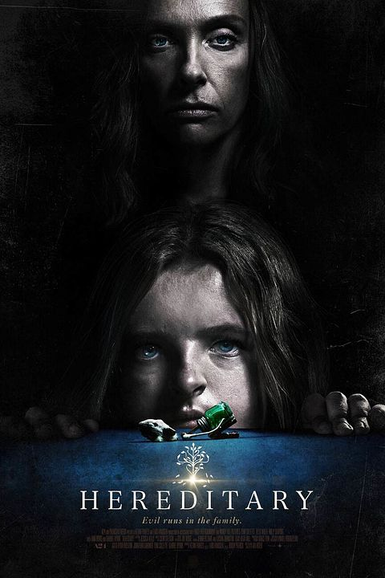

Diretor:
Ari Aster
Elenco:
Toni Collette, Alex Wolff, Milly Shapiro, Gabriel Byrne
Faixa etária:
Não recomendado para menores de 16 anos
Lançamento:
21 de junho de 2018
Gênero:
Terror, Suspense, Mistério, Drama, Sobrenatural.
Duração:
127 minutos
Sinopse
Após a morte da reclusa avó, a família Graham começa a desvendar algumas coisas. Mesmo após a partida da matriarca, ela permanece como se fosse uma sombra sobre a família, especialmente sobre a solitária neta adolescente, Charlie, por quem ela sempre manteve uma fascinação não usual. Com um crescente terror tomando conta da casa, a família explora lugares mais escuros para escapar do infeliz destino que herdaram.